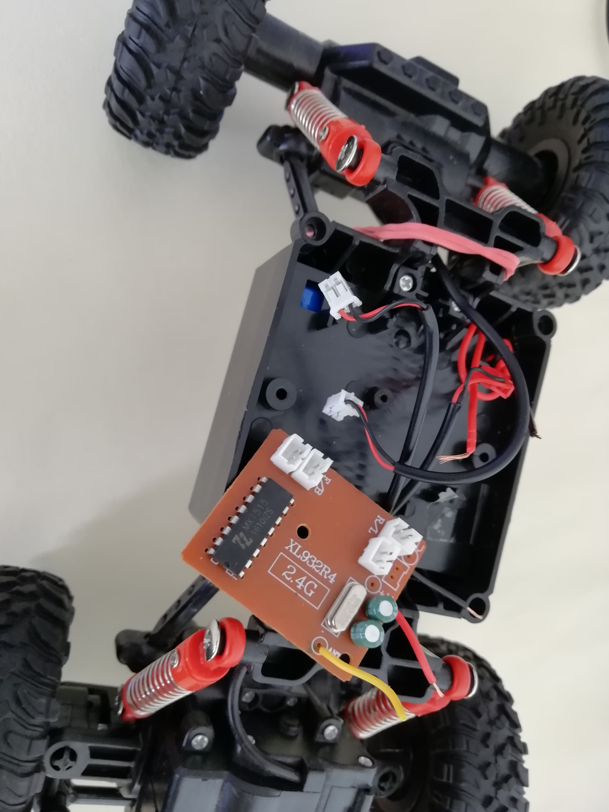
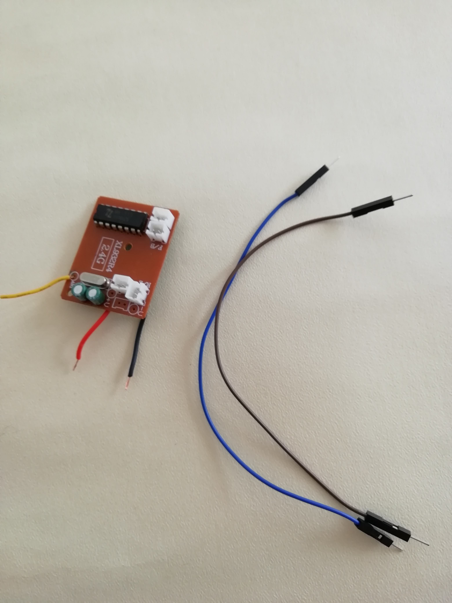
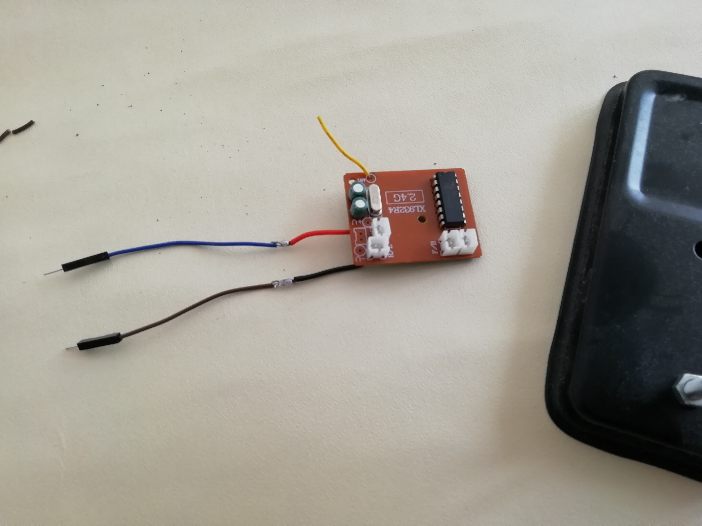

The car uses a XL932R4 Rf receiver, if the right, left, front and back output are easy to find on the pcd we cannot use them as it. These outputs drive power to the engine are not suitable with the arduino.

To detected the command pin that we can derive to use the arduino, put a crocodile plug on the mass and test the voltage on Pins while you set a command.


Here the map for hacking the receiver.
As soldering on the receiver card looks tedious to achieve, an other approach is possible. the receiver of the car handles two features:
It is possible to use the receiver, only to handles remote commands, and use a third party motor driver to control the power. The receiver will be plug to the arduino board, and this one will control motor driver.
  To do this unplug the motor from the Rf receiver, cut the 2 wire from the battery, and solder two longer wire compatible with an Arduino. Do the same with the battery.
Generic shield (two L293D motor driver chips) with 4 outputs:
In order to easily test the driver, screw 2 leds (5V or 12V) with opposite connector at each motor output. Connecting a voltmeter count be a great idea too.
const int trigPin = 9; const int echoPin = 10;